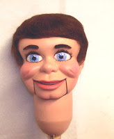
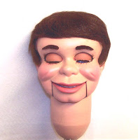

Twice Recycled!
5/14/2009
It was during the late 1970's when Dale Brown asked me to build him a figure with open and close eyes. He planned to use it for a short bit at a banquet. The bit was such a hit he continued to use the figure off and on for a period of time, until his daughter, Lauren, decided to try her hand at ventriloquism. At that point Dale had me rewig the figure, changing it to a female. Thus, recycled once, the figure took on new life through the hands of its second owner.
But as is sometimes the case over passing years, and Lauren's interests changed, the dummy ended up sitting in a closet, unused. Until last year when it was time for yet another change. Several, in fact.
Dale is on the marketing board of their local civic theatre and the theatre's artistic's director's daughter, who was nine, really wanted a dummy and wants to learn ventriloquism. So her Dad, with Dale, conspired to give the figure (with Lauren's permission) as a birthday gift to what would become its third owner. Only she wanted a boy, not a girl.
{kind=link}

So once again the dummy came back to me for a wig change. I also gave it new springs/strings and paint job. Along with a ne
{kind=link}

w boy's wig. (photos here) Once again it has been "recycled", totally happy with himself, no loss of identity - no therapy necessary. (But the story of his recycled "life" could leave others a bit confused!)